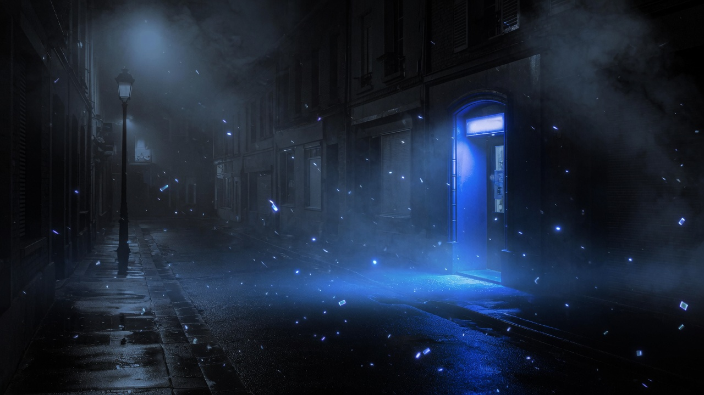
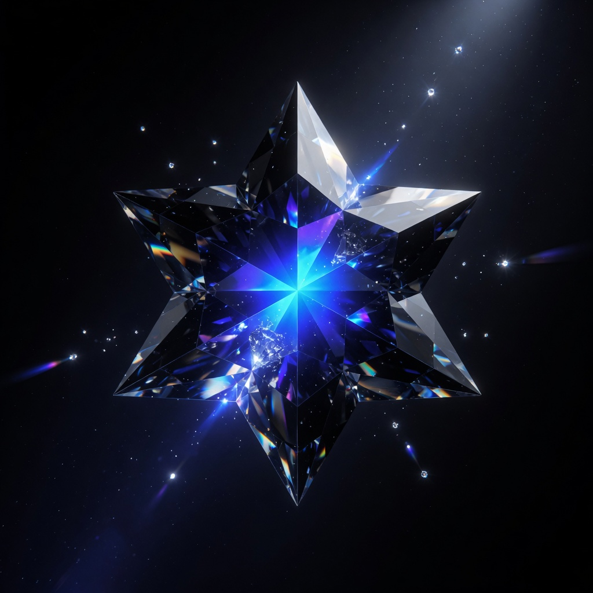
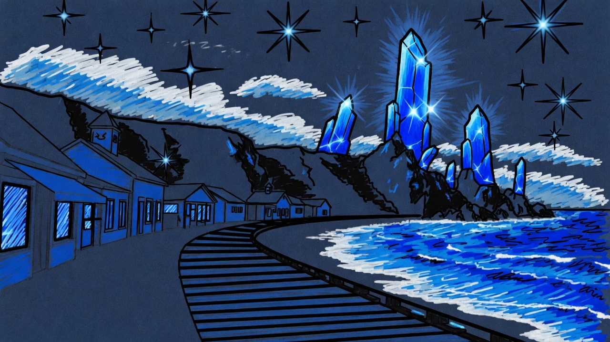

Dark and mysterious
Scream
The favorite that feels like fog, a quiet street, and a light you notice from far away.
A future in blue and black
Steven Universe, walked into the night. Same stars, darker water, bluer gems, and a sky that keeps moving.
01 — In his words
Antonio said what the site should be. Every part below keeps that, and gives it a future.
02 — Colors
Blue is the gem light, the water, and the streak in the hair. Black is the mystery around it. Nothing else has to shout.
Deep night

03 — The feeling
The show feels like songs, gems, and a beach town that is allowed to be soft. The future of that feeling turns the lights down. The sidewalk is still worn. The ocean still knows the way home. The crystals are just awake now.

04 — Drawings
The drawings stay simple: a big head, a jacket, a star, thick lines, and only blue and black. The future version of that same kid is the one standing in the night above.


05 — Movies

Dark and mysterious
The favorite that feels like fog, a quiet street, and a light you notice from far away.
Stars and songs
The show, and the movie. Home, gems, and a beach that still feels kind after dark.
Still adding
The rest of the list. It can grow. The night has room.
06 — Favorite game
Stevos Gem Eras Roleplay is the game. It is a fan-made world on Roblox: open maps, gem characters, fusions with friends, different eras, and secrets to hunt. An account needs to be at least 31 days old to play.